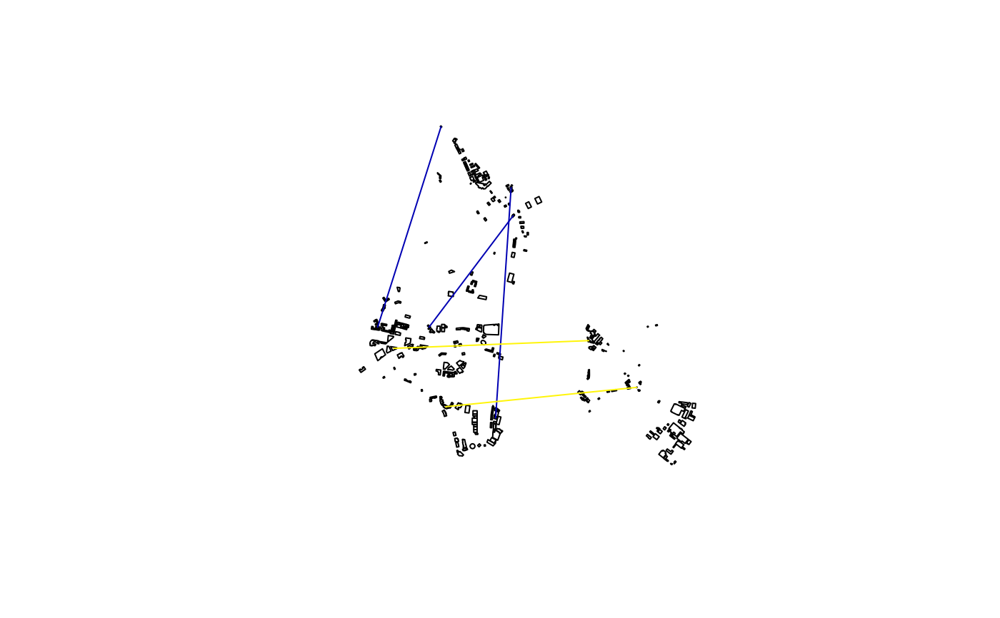
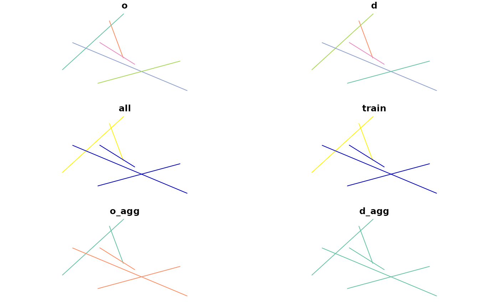
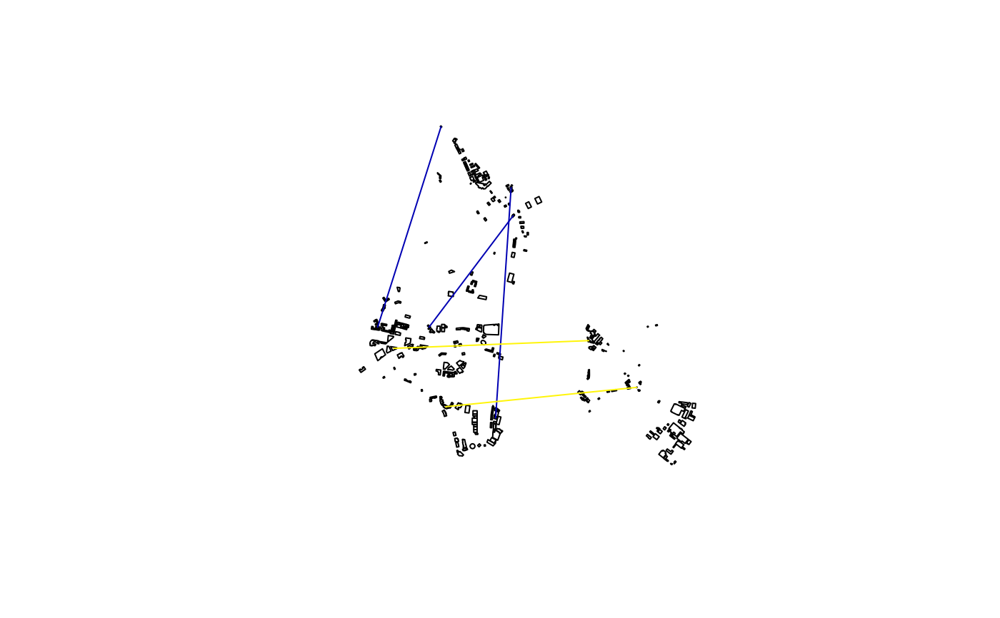
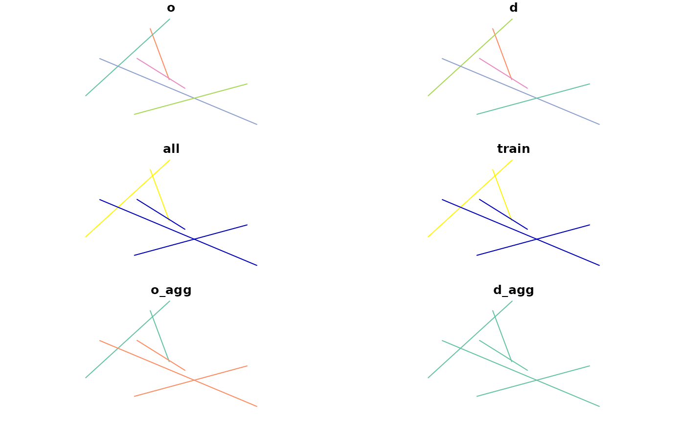

Split-up each OD pair into multiple OD pairs based on subpoints/subzones
Source:R/aggregate.R
od_disaggregate.RdThis function is for splitting-up OD pairs.
It increases the number of rows in an OD dataset, while aiming
to keep the amount of travel represented in the data the same.
To take an analogy from another package, it's roughly equivalent
to tidyr::pivot_longer().
od_disaggregate(
od,
z,
subpoints = NULL,
code_append = "_ag",
population_column = 3,
max_per_od = 5,
keep_ids = TRUE,
integer_outputs = FALSE
)
od_split(
od,
z,
subpoints = NULL,
code_append = "_ag",
population_column = 3,
max_per_od = 5,
keep_ids = TRUE,
integer_outputs = FALSE
)Arguments
- od
An origin-destination data frame
- z
Zones representing origins and destinations
- subpoints
Points, lines or polygons within the zones. These define the OD data start/end points.
- code_append
The name of the column containing aggregate zone names
- population_column
The column containing the total population (if it exists)
- max_per_od
Maximum flow in the population_column to assign per OD pair. This only comes into effect if there are enough subpoints to choose from.
- keep_ids
Should the origin and destination ids be kept?
TRUEby default, meaning 2 extra columns are appended, with the nameso_aggandd_aggcontaining IDs from the original OD data.- integer_outputs
Should integer outputs be returned?
FALSEby default. Note: there is a known issue when integer results are generated. See https://github.com/ITSLeeds/od/issues/31 for details.
Details
An alias for the function is od_split().
Examples
od = od_data_df[1:2, c(1, 2, 9)]
od
#> geo_code1 geo_code2 bicycle
#> 1 E02002384 E02006875 13
#> 2 E02002404 E02006875 10
zones = od::od_data_zones_min
od_sf = od_to_sf(od, zones)
#> 0 origins with no match in zone ids
#> 0 destinations with no match in zone ids
#> points not in od data removed.
set.seed(2021) # for reproducibility
od_disag = od_disaggregate(od, zones)
#> Creating origin and destination points at random locations
od_disag2 = od_disaggregate(od, zones, max_per_od = 11)
#> Creating origin and destination points at random locations
plot(zones$geometry)
plot(od_sf$geometry, lwd = 9, add = TRUE)
plot(od_disag$geometry, col = "grey", lwd = 1, add = TRUE)
plot(od_disag2$geometry, col = "green", lwd = 1, add = TRUE)
 table(od_disag$o_agg, od_disag$d_agg)
#>
#> E02006875
#> E02002384 3
#> E02002404 2
# integer results
od_disaggregate(od, zones, integer_outputs = TRUE)
#> Creating origin and destination points at random locations
#> Simple feature collection with 5 features and 5 fields
#> Geometry type: LINESTRING
#> Dimension: XY
#> Bounding box: xmin: -1.557405 ymin: 53.7873 xmax: -1.515148 ymax: 53.81147
#> Geodetic CRS: WGS 84
#> o d bicycle o_agg d_agg geometry
#> 1 2 9 4 E02002384 E02006875 LINESTRING (-1.556161 53.81...
#> 2 1 6 4 E02002384 E02006875 LINESTRING (-1.534144 53.80...
#> 3 3 8 5 E02002384 E02006875 LINESTRING (-1.552041 53.81...
#> 4 4 10 5 E02002404 E02006875 LINESTRING (-1.533423 53.79...
#> 5 5 7 5 E02002404 E02006875 LINESTRING (-1.515148 53.78...
# with more trips per disaggregated OD pair:
disag = od_disaggregate(od_data_df[1:2, ], z = zones, max_per_od = 50)
#> Creating origin and destination points at random locations
plot(disag[0])
# with subpoints
subpoints = sf::st_sample(zones, 100)
od_disag_subpoints = od_disaggregate(od, zones, subpoints = subpoints)
plot(subpoints)
plot(od_disag_subpoints$geometry, add = TRUE)
# with buildings data
od_disag_buildings = od_disaggregate(od, zones, od_data_buildings)
#> Converting polygons to points
#> Warning: st_centroid assumes attributes are constant over geometries
summary(od_disag_buildings)
#> o d bicycle o_agg
#> Length:5 Length:5 Min. :4.333 Length:5
#> Class :character Class :character 1st Qu.:4.333 Class :character
#> Mode :character Mode :character Median :4.333 Mode :character
#> Mean :4.600
#> 3rd Qu.:5.000
#> Max. :5.000
#> d_agg geometry
#> Length:5 LINESTRING :5
#> Class :character epsg:4326 :0
#> Mode :character +proj=long...:0
#>
#>
#>
plot(od_data_buildings$geometry)
plot(od_disag_buildings[3], add = TRUE)

# mapview::mapview(od_disag_buildings)
od = od_data_df[1:2, 1:4]
subzones = od_data_zones_small
try(od_disaggregate(od, zones, subzones))
#> Converting polygons to points
#> Warning: st_centroid assumes attributes are constant over geometries
#> Error in sample.int(length(x), size, replace, prob) :
#> cannot take a sample larger than the population when 'replace = FALSE'
od_disag = od_disaggregate(od, zones, subzones, max_per_od = 500)
#> Converting polygons to points
#> Warning: st_centroid assumes attributes are constant over geometries
ncol(od_disag) -3 == ncol(od) # same number of columns, the same...
#> [1] TRUE
# Except disag data gained geometry and new agg ids:
sum(od_disag[[3]]) == sum(od[[3]])
#> [1] TRUE
sum(od_disag[[4]]) == sum(od[[4]])
#> [1] TRUE
plot(od_disag)

# test with road network dataset (don't run as time consuming):
if (FALSE) { # \dontrun{
od_disag_net = od_disaggregate(od, zones, od_road_network, max_per_od = 500)
plot(zones$geometry)
plot(od_road_network$geometry, add = TRUE, col = "green")
plot(od_disag_net$geometry, add = TRUE)
mapview::mapview(zones) + od_disag_net + od_road_network
} # }
table(od_disag$o_agg, od_disag$d_agg)
#>
#> E02006875
#> E02002384 3
#> E02002404 2
# integer results
od_disaggregate(od, zones, integer_outputs = TRUE)
#> Creating origin and destination points at random locations
#> Simple feature collection with 5 features and 5 fields
#> Geometry type: LINESTRING
#> Dimension: XY
#> Bounding box: xmin: -1.557405 ymin: 53.7873 xmax: -1.515148 ymax: 53.81147
#> Geodetic CRS: WGS 84
#> o d bicycle o_agg d_agg geometry
#> 1 2 9 4 E02002384 E02006875 LINESTRING (-1.556161 53.81...
#> 2 1 6 4 E02002384 E02006875 LINESTRING (-1.534144 53.80...
#> 3 3 8 5 E02002384 E02006875 LINESTRING (-1.552041 53.81...
#> 4 4 10 5 E02002404 E02006875 LINESTRING (-1.533423 53.79...
#> 5 5 7 5 E02002404 E02006875 LINESTRING (-1.515148 53.78...
# with more trips per disaggregated OD pair:
disag = od_disaggregate(od_data_df[1:2, ], z = zones, max_per_od = 50)
#> Creating origin and destination points at random locations
plot(disag[0])
# with subpoints
subpoints = sf::st_sample(zones, 100)
od_disag_subpoints = od_disaggregate(od, zones, subpoints = subpoints)
plot(subpoints)
plot(od_disag_subpoints$geometry, add = TRUE)
# with buildings data
od_disag_buildings = od_disaggregate(od, zones, od_data_buildings)
#> Converting polygons to points
#> Warning: st_centroid assumes attributes are constant over geometries
summary(od_disag_buildings)
#> o d bicycle o_agg
#> Length:5 Length:5 Min. :4.333 Length:5
#> Class :character Class :character 1st Qu.:4.333 Class :character
#> Mode :character Mode :character Median :4.333 Mode :character
#> Mean :4.600
#> 3rd Qu.:5.000
#> Max. :5.000
#> d_agg geometry
#> Length:5 LINESTRING :5
#> Class :character epsg:4326 :0
#> Mode :character +proj=long...:0
#>
#>
#>
plot(od_data_buildings$geometry)
plot(od_disag_buildings[3], add = TRUE)

# mapview::mapview(od_disag_buildings)
od = od_data_df[1:2, 1:4]
subzones = od_data_zones_small
try(od_disaggregate(od, zones, subzones))
#> Converting polygons to points
#> Warning: st_centroid assumes attributes are constant over geometries
#> Error in sample.int(length(x), size, replace, prob) :
#> cannot take a sample larger than the population when 'replace = FALSE'
od_disag = od_disaggregate(od, zones, subzones, max_per_od = 500)
#> Converting polygons to points
#> Warning: st_centroid assumes attributes are constant over geometries
ncol(od_disag) -3 == ncol(od) # same number of columns, the same...
#> [1] TRUE
# Except disag data gained geometry and new agg ids:
sum(od_disag[[3]]) == sum(od[[3]])
#> [1] TRUE
sum(od_disag[[4]]) == sum(od[[4]])
#> [1] TRUE
plot(od_disag)

# test with road network dataset (don't run as time consuming):
if (FALSE) { # \dontrun{
od_disag_net = od_disaggregate(od, zones, od_road_network, max_per_od = 500)
plot(zones$geometry)
plot(od_road_network$geometry, add = TRUE, col = "green")
plot(od_disag_net$geometry, add = TRUE)
mapview::mapview(zones) + od_disag_net + od_road_network
} # }